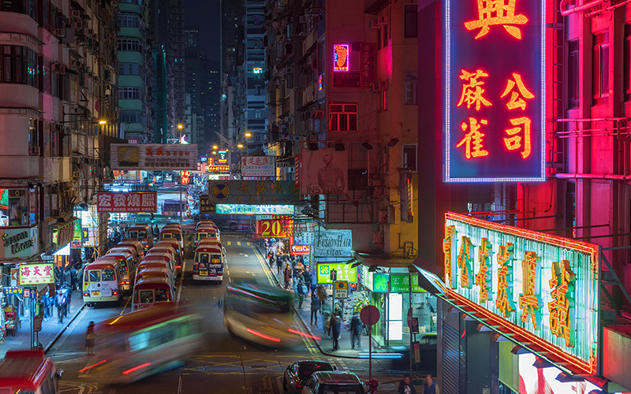

Overview
Today Hong Kong remains a melting pot of East and West and one of the major regional financial hubs in Asia that it hosts numerous multinational corporations and has a robust banking sector, making it a pivotal gateway for international trade and finance in Asia. With a population of over 7 million, the city is characterized by a eclectic blend of modernity and tradition, where skyscrapers coexist with historic temples and natural lanscape. All of these stunning skyline, iconic harbor, and rich cultural heritage have contributed to Hong Kong's unique brand image and urban fabric.
Historic & Cultural Context
Hong Kong's history is marked by its colonial past and strategic location. Originally a small fishing village, it became a British colony in 1842 after the Opium Wars. This colonial influence has significantly shaped its legal system, education, and cultural landscape. In 1997, Hong Kong was handed back to China under the "one country, two systems" framework, which allows it to maintain a degree of autonomy. This historical background has fostered a unique identity, combining Chinese traditions with Western values. It gives the foundation of Hong Kong's incredibly diverse cultural landscape, reflecting its history and the various ethnic communities that inhabit the city. Cantonese culture predominates, but influences from British, Japanese, Thai and other international communities are evident in the food, festivals, and daily life. The city is famous for its culinary scene, ranging from Michelin-starred restaurants to local street food stalls serving delicacies like dim sum, wonton noodles, and egg waffles. Festivals like the Mid-Autumn Festival and Chinese New Year are celebrated with great enthusiasm, showcasing traditional customs and vibrant activities.
Neon Signages in Hong Kong
Another Hong Kong's cultural element especially worth mentioning is the neon signages. These are icons of the city's urban landscape, reflecting its rich history and cultural evolution. These bright, colorful signs have adorned the streets since the mid-20th century, becoming synonymous with Hong Kong's exciting nightlife and commercial vibrancy. Initially introduced in the 1920s, neon signs proliferated in the post-war era during the 1950s and 1960s when the city underwent rapid economic growth. They served not only as advertisements for shops and restaurants but also as symbols of modernity and aspiration.
The neon signs of Hong Kong are more than just commercial tools; they represent the city's identity and aesthetic. With their bold colors and intricate designs, these signs create a dynamic visual tapestry that captures the energy of urban life. They evoke a sense of nostalgia for many locals and serve as a reminder of the city's rich history. The signs often feature traditional Chinese characters alongside English, showcasing the blend of Eastern and Western influences that characterize Hong Kong. Despite their cultural significance, many neon signs face threats from urban development, changing regulations, and the rise of digital advertising. As older businesses close and new establishments emerge, iconic signs are often removed or replaced, leading to concerns about the loss of this unique aspect of Hong Kong's heritage. Furthermore, the decline of traditional neon sign-making skills poses a challenge to the preservation of this art form, as fewer artisans are available to create and repair these signs. In response to these challenges, various initiatives have emerged to preserve Hong Kong's neon signage culture. Local organizations and artists have been advocating for the recognition of neon signs as cultural heritage. For instance, the "Neon Heritage" project aims to document and restore iconic signs, while exhibitions showcase the craftsmanship and artistry involved in neon sign-making. The Hong Kong government has also taken steps to promote heritage conservation, including the listing of certain neon signs as cultural landmarks. The future of neon signage in Hong Kong is a blend of preservation and innovation. While many traditional signs are at risk, new artists and designers are experimenting with neon in contemporary ways, integrating it into modern art and design projects. This evolution reflects a broader trend of revitalizing urban spaces while honoring the past. As the city continues to grow and change, the challenge will be to balance development with the preservation of its unique cultural elements, ensuring that the neon signs remain a cherished and recognizable part of Hong Kong's identity.
